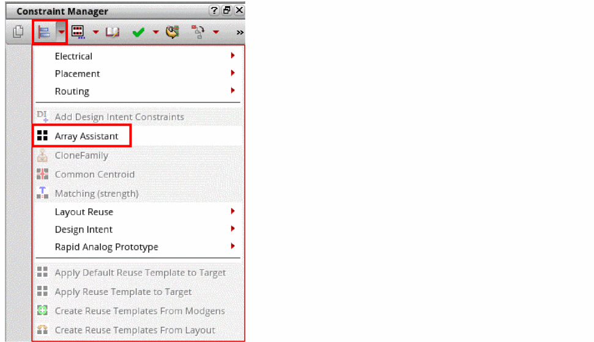

Opening Array Assistant From the Constraint Manager
To open the Array Assistant from the Constraint Manager:
- Select either a Modgen in the Constraint Manager assistant or the required devices in the layout canvas.
-
Open the constraint list, which is the second icon in the Constraint Manager assistant.
 - Choose Array Assistant. The Array Assistant appears.
Alternatively, you can select a Modgen or the required instances and press Control + M. This bindkey may not open the Array Assistant if the bindKeys.il file is loaded. The bindkey assignments in the file take precedence. The Control + M bindkey can then be used to swap instances.
Related Topics
Automatic Generation of Modgens using the Array Assistant
Opening Array Assistant During Device Placement
Opening the Array Assistant During Interactive Placement
Return to top